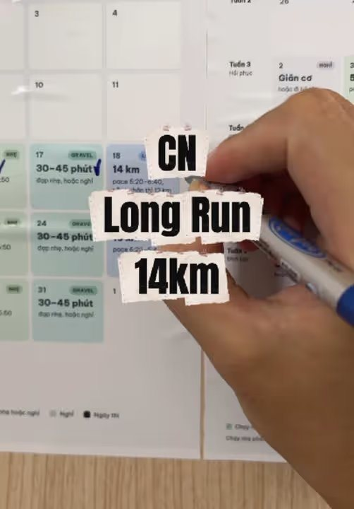

Có những thứ, nếu không bắt đầu thì sẽ chẳng bao giờ có lần đầu.
Chiều Chủ nhật 25/10/2026, tôi xỏ giày, bật Strava và tự nói với mình:
“Hôm nay thử 21km xem sao.”
Không giải chạy. Không đám đông cổ vũ. Không trạm nước.
Chỉ có tôi, đôi giày và cung đường quen thuộc ở Đồng Thái.
1. Vì sao lại là 21km?
Từ khi bắt đầu chạy lại vào tháng 3, tôi luôn có một mục tiêu nằm ở cuối danh sách: bán marathon 21km.
Lúc đó nó xa lắm. Xa đến mức tôi không dám nói với ai.
Tháng 5 tôi mới chạy được 10km không nghỉ. Tháng 6 chạy đủ 150km. Tháng 8 hoàn thành thử thách 100km. Đầu tháng 10, những buổi long run Chủ nhật bắt đầu dài dần lên: 12km, 13km, rồi 14km.
Tôi chạy theo giáo án: thứ 4 bài nhanh, thứ 6 chạy nhẹ hồi phục, Chủ nhật chạy dài.


Khi chạy 14km mà vẫn còn thấy dư sức, tôi nghĩ: có lẽ đã đến lúc.
2. 15km đầu: giữ nhịp, đừng tham
Bài học lớn nhất của tôi với những buổi chạy dài là: đừng tham nhanh ở đầu.
Tôi giữ pace quanh 6:05–6:15 suốt 15km đầu. Chậm, đều, thở thoải mái, vẫn có thể nói chuyện được.
Có lúc chân muốn chạy nhanh hơn. Nhưng tôi biết, nếu tiêu hết sức bây giờ thì những km cuối sẽ trả giá.
3. Km 16 đến 18: cuộc chiến thật sự bắt đầu
Qua km 15, mọi thứ bắt đầu khác.
Bắp chân căng. Đùi nặng. Mồ hôi ra như tắm dù trời đã chiều.
Tôi phải dừng lại uống nước, đi bộ vài chục mét cho nhịp tim hạ xuống. Km 16 mất 7:28. Km 18 mất 8:28 – chậm nhất cả buổi.
Đó là lúc đầu tôi bắt đầu “thương lượng” quen thuộc:
“18km rồi, vậy là giỏi lắm rồi. Về thôi.”
Chạy một mình thì không ai biết nếu mình dừng lại.
Nhưng mình biết.
4. 3km cuối: chạy bằng niềm tin
Tôi nhớ lại những ngày đầu tiên, chạy 500m đã phải dừng.
Nhớ lại 9 năm đi ca, về nhà chỉ muốn nằm.
Nhớ lại lý do mình bắt đầu hành trình này.
Và tôi chạy tiếp.
Điều bất ngờ là 3km cuối lại là 3km nhanh nhất cả buổi: 5:52 – 5:41 – 5:57.
Có lẽ khi biết đích đến đã rất gần, cơ thể tự tìm ra sức mạnh mà chính mình cũng không biết là có.
5. Con số sau 21km
- Quãng đường: 21,20 km
- Thời gian di chuyển: 2:09:55
- Pace trung bình: 6:08/km
- Tổng thời gian (cả lúc dừng uống nước): 2:14:11
- Năng lượng tiêu hao: khoảng 1.670 kcal
Dừng đồng hồ xong, tôi đứng thở một lúc lâu.
Không có ai trao medal. Không có ảnh về đích.
Nhưng đó là một trong những khoảnh khắc tự hào nhất của tôi năm 2026.
6. Điều 21km dạy tôi
- Chạy chậm không có gì xấu. Chạy đều mới là thứ đưa mình về đích.
- Những km khó nhất không nằm ở chân, mà nằm ở đầu.
- Kết quả hôm nay là tổng của rất nhiều ngày hôm qua. 21km không đến từ một buổi, mà đến từ 8 tháng không bỏ cuộc.
Công việc cũng vậy. Những dự án lớn không hoàn thành trong một ngày. Nó được làm từ từng việc nhỏ, từng ngày, đều đặn.
7. Mục tiêu tiếp theo: Sub 2
2:09:55 vẫn còn cách mốc 2 giờ gần 10 phút.
Mục tiêu tiếp theo của tôi là bán marathon dưới 2 giờ – pace khoảng 5:40.
Sau buổi 21km này, tôi tiếp tục tập tempo, interval và long run. Đến ngày 11/11, tôi có PR 10km 49:40 – một tín hiệu cho thấy tốc độ đang lên.
Còn bây giờ, vẫn là giáo án. Vẫn là những buổi chạy một mình. Vẫn là kỷ luật.
Nếu bạn đang nhìn một mục tiêu và thấy nó quá xa…
hãy nhớ rằng, tôi cũng từng bắt đầu từ 500m.
👉 Xem video trên TikTok: @vandq96 – Long Run first HM